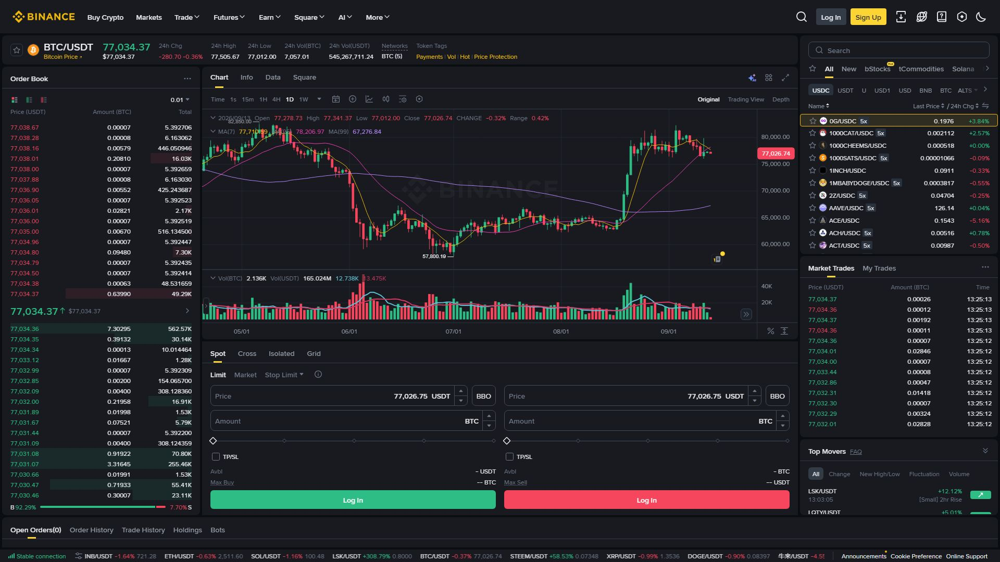
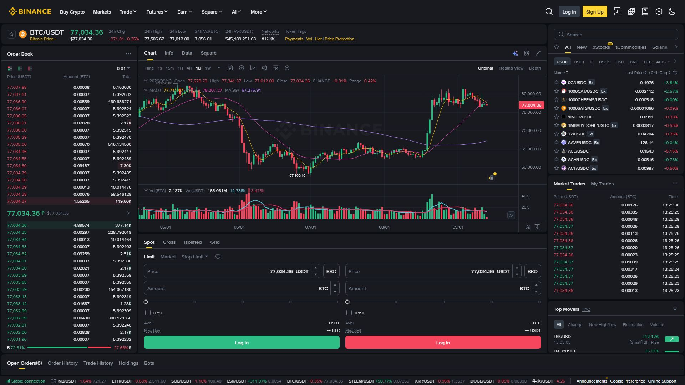

بائننس پر خرید و فروخت کا ہر فیصلہ آخر میں ایک آرڈر کی صورت اختیار کرتا ہے۔ کون سا آرڈر منتخب کریں — یہ آپ کی حکمتِ عملی، وقت اور رسک برداشت کرنے کی صلاحیت پر منحصر ہے۔ یہ باب آپ کو پانچ بنیادی آرڈر اقسام کو عملی مثالوں کے ساتھ سمجھائے گا — اور یہ کہ کامیاب ٹریڈر وہ ہے جو داخل ہونے سے پہلے خارجی منصوبہ جانتا ہے۔
آرڈر = بائننس کو دیا گیا آپ کا باقاعدہ حکم: "یہ مقدار، اس قیمت پر، اس طریقے سے خریدو یا بیچو۔"
جب آپ ٹریڈنگ پیج پر Order Entry پینل سے کوئی بھی خانہ پُر کر کے "Buy" یا "Sell" دباتے ہیں، تو وہ دراصل ایک آرڈر ہے جو بائننس کے میچنگ انجن (Matching Engine) کو بھیجا جاتا ہے۔ یہ انجن خریدار اور فروخت کنندہ کو ملاتا ہے۔
آرڈر اقسام (Order Types)
├── Market Order .......... فوری، موجودہ بہترین قیمت پر
├── Limit Order ........... صرف آپ کی مقرر کردہ قیمت پر
├── Stop-Limit Order ...... ایک Trigger قیمت + ایک Limit قیمت
├── Stop-Market Order ..... ایک Trigger قیمت → پھر فوری Market
└── OCO ................... دو آرڈر جوڑے میں؛ ایک بھرا تو دوسرا منسوخ| حیثیت | انگریزی نام | مطلب |
|---|---|---|
| کھلا | Open | آرڈر مارکیٹ میں موجود، بھرنے کا منتظر |
| بھرا گیا | Filled | آرڈر مکمل طور پر بھر گیا |
| جزوی طور پر بھرا | Partially Filled | کچھ مقدار بھری، باقی منتظر |
| منسوخ | Canceled | آرڈر واپس لے لیا گیا |
| مسترد | Rejected | بائننس نے قبول نہ کیا (بیلنس یا قواعد) |
💡 اہم: بائننس کے جدید انٹرفیس میں "آرڈر" اور "پوزیشن" الگ چیزیں ہیں۔ Spot مارکیٹ میں آپ آرڈرز دیکھتے ہیں، جبکہ Futures میں "Open Positions" بھی دیکھتے ہیں۔
Market Order = سب سے تیز آرڈر۔ آپ حکم دیتے ہیں اور بائننس اُس وقت دستیاب بہترین قیمت پر فوری بھر دیتا ہے۔
یہاں "بہترین دستیاب قیمت" کا مطلب ہے Order Book کی موجودہ بہترین قیمت — نہ کہ وہ قیمت جو اسکرین پر لکھی ہوئی دکھتی ہے۔

صورتحال: آپ BTC فوری خریدنا چاہتے ہیں
────────────────────────────────
Order Type : Market
Amount : 0.01 BTC
Current : ~$96,000
Total : ~$960.00
→ بائننس فوراً Order Book کے بہترین Sell آرڈرز سے بھرے گا
→ نتیجہ: "<1 سیکنڈ میں خرید مکمل"جب آرڈر بہت بڑا ہو، تو وہ Order Book کی کئی سطحوں (levels) کو کھاتا ہے، اور ہر اگلی سطح کی قیمت تھوڑی مختلف ہوتی ہے۔ اس فرق کو Slippage کہتے ہیں۔
| صورتحال | Slippage کا امکان |
|---|---|
| چھوٹا آرڈر، Liquid مارکیٹ (BTC/USDT) | تقریباً صفر |
| بڑا آرڈر، پتلی مارکیٹ (چھوٹے کوائنز) | زیادہ ہو سکتا ہے |
| اوقاتِ کار — خبر کے وقت | تیزی سے بدلتی قیمت |
| صورتحال | Market مناسب؟ |
|---|---|
| فوری داخلہ یا اخراج ضروری ہو | ✅ ہاں |
| Liquid مارکیٹ اور چھوٹا حجم | ✅ ہاں |
| درست قیمت کی ضمانت چاہیے | ❌ نہیں — Limit استعمال کریں |
| پتلی مارکیٹ میں بڑا آرڈر | ❌ محتاط رہیں — Slippage |
Limit Order = آپ خود قیمت طے کرتے ہیں۔ آرڈر صرف اُس قیمت پر یا اس سے بہتر قیمت پر بھرے گا، ورنہ Open رہے گا۔
صورتحال: BTC فی الوقت $96,000 پر ہے، آپ $92,000 پر خریدنا چاہتے ہیں
────────────────────────────────
Order Type : Limit
Price : 92,000 USDT ← آپ کی مطلوبہ قیمت
Amount : 0.01 BTC
Total : 920 USDT
→ قیمت گر کر $92,000 نہ آئے تو آرڈر Open رہے گا
→ قیمت $92,000 پر آئی → خرید بھری گئی ✅صورتحال: آپ کے پاس BTC ہے، $100,000 پر بیچنا چاہتے ہیں
────────────────────────────────
Order Type : Limit
Price : 100,000 USDT
Amount : 0.01 BTC
→ قیمت بڑھ کر $100,000 نہ ہوئے تو آرڈر Open
→ $100,000 پر پہنچی → فروخت بھری گئی ✅❌ "Limit Order میں Slippage بالکل نہیں ہوتی" — یہ ہمیشہ درست نہیں۔
Limit Order بھرنے کی ضمانت نہیں دیتا۔ اگر مارکیٹ وہاں تک نہیں آتی تو آرڈر بغیر بھرے رہ جائے گا۔ اور اگر قیمت آپ کی منتخب قیمت کو چھو کر تیزی سے گزر جائے، تو آپ کو خرید/فروخت تو مل جائے گی، مگر منصوبے سے محروم رہ سکتے ہیں۔ Slippage سے بچاؤ کی حقیقی ضمانت نہیں — مکمل کنٹرول ہے قیمتِ بھرنے پر، نہ کہ بھرنے کی ضمانت پر۔
| صورتحال | Limit مناسب؟ |
|---|---|
| مخصوص قیمت پر داخل ہونا ہے | ✅ ہاں |
| بڑے ٹریڈز میں Slippage سے بچنا ہے | ✅ ہاں |
| بہتر قیمت کا انتظار کر سکتے ہیں | ✅ ہاں |
| فوری اخراج ضروری ہے | ❌ نہیں — Market |
Stop-Limit = دو شرائط کا ملاپ۔ پہلے ایک Stop (Trigger) قیمت مقرر ہوتی ہے؛ جب مارکیٹ وہاں پہنچے تو خودکار طور پر ایک Limit Order Order Book میں داخل ہو جاتا ہے۔
مکینزم:
Stop (Trigger) قیمت ──► مارکیٹ وہاں پہنچی ──► Limit Order متحرک ──► Limit قیمت پر بھرنے کا انتظارصورتحال: آپ کے پاس BTC ہے، $93,000 پر حفاظتی Stop چاہتے ہیں
────────────────────────────────
Stop Price : 93,000 USDT ← یہاں پہنچتے ہی متحرک ہوگا
Limit Price : 92,800 USDT ← اتنی قیمت پر فروخت کی کوشش
Amount : 0.01 BTC
→ مارکیٹ $93,000 پر پہنچی → Stop متحرک
→ ایک Sell Limit @ $92,800 Order Book میں گیا
→ اگر $92,800 یا بہتر قیمت دستیاب → فروخت مکمل ✅اگر مارکیٹ Stop قیمت کو چھو کر بہت تیزی سے نیچے گر جائے اور Limit قیمت سے نیچے نکل جائے، تو آپ کا Sell Limit بھی نہیں بھرے گا — آپ پھنس سکتے ہیں۔ اسی لیے Stop-Limit میں Limit قیمت اور Stop قیمت کا فرق مناسب رکھنا ضروری ہے۔
✅ صحیح: Stop $93,000، Limit $92,800 (فرق 0.2%)
→ عام حرکت میں بھر جائے گا
❌ غلط: Stop $93,000، Limit $92,000 (فرق 1%+)
→ تیز گراؤٹ میں نہیں بھرے گا — پھنس جائیں گےStop-Market = جب مارکیٹ Stop (Trigger) قیمت تک پہنچے → بائننس فوری Market Order بھیج دیتا ہے (کوئی Limit نہیں)۔
صورتحال: فوری حفاظتی اخراج کی ضرورت
────────────────────────────────
Stop Price : 93,000 USDT
Amount : 0.01 BTC
→ مارکیٹ $93,000 پر پہنچی
→ فوری Market Sell بھیجا گیا ✅
→ موجودہ بہترین قیمت پر بھر گیا (Slippage ممکن)| پہلو | Stop-Limit | Stop-Market |
|---|---|---|
| Trigger قیمت | ✅ لازم | ✅ لازم |
| متحرک ہونے کے بعد | ایک Limit Order داخل | فوری Market Order |
| بھرنے کی ضمانت | ❌ نہیں | ✅ ہمیشہ بھرے گا (مگر قیمت کم/زیادہ ہو سکتی ہے) |
| قیمت کا کنٹرول | مکمل | نہیں — Slippage ممکن |
| بہترین صورتحال | Liquid مارکیٹ میں Stop-Loss | فوری اخراج ضروری ہو |
OCO = "ایک کے بھرنے پر دوسرا منسوخ۔" آپ دو آرڈر اکٹھے سیٹ کرتے ہیں (ایک Limit اور ایک Stop-Limit)۔ جب ایک بھر جائے، دوسرا خودکار طور پر منسوخ ہو جاتا ہے۔
⚠️ اہم حقیقت: OCO صرف Spot مارکیٹ کا آرڈر ہے — Futures میں یہ موجود نہیں (وہاں TP/SL اور Trailing Stop الگ سے استعمال ہوتے ہیں)۔
بائننس پر OCO عام طور پر ایک Limit Order اور ایک Stop-Limit Order کے جوڑے پر مشتمل ہوتا ہے۔ یہ دونوں ایک ہی مقدار کو روکتے ہیں، اس لیے ایک کے بھرنے پر دوسرے کے لیے فنڈز ختم ہو جاتی ہیں اور وہ منسوخ ہو جاتا ہے۔
OCO کا تصور (کل 0.01 BTC فرض کریں):
ہدف/TP راستہ: Sell Limit @ 100,000 ─┐
├─ دونوں اکٹھے سیٹ
حفاظت/SL راستہ: Sell Stop-Limit @ 93,000 ─┘
نتیجہ:
• اگر قیمت اوپر (100,000) گئی → Limit بھرا → Stop-Limit خودکار منسوخ
• اگر قیمت نیچے (93,000) گئی → Stop-Limit متحرک و بھرا → Limit منسوخآپ 0.01 BTC @ 96,000 پر خرید چکے
────────────────────────────────
OCO شاخ 1 — منافع کے لیے:
Price (Limit) : 100,000 | Amount: 0.01 BTC
OCO شاخ 2 — حفاظت کے لیے:
Stop : 93,000 | Limit: 92,800 | Amount: 0.01 BTC⚠️ اہم وضاحت: اوپر دیا "TP1 / TP2 / SL" والا ماڈل عام طور پر OCO نہیں بلکہ "Take Profit اور Stop Loss کے الگ الگ آرڈرز" ہوتے ہیں۔ حقیقی OCO دو شاخوں کا ہوتا ہے اور ایک کا بھرنا دوسرے کو منسوخ کر دیتا ہے۔

| پہلو | وضاحت |
|---|---|
| دو حکمتِ عملیاں | نفع بکنگ (TP) اور حفاظت (SL) یکجا |
| یکساں مقدار | دونوں شاخیں ایک ہی مقدار کی حامل |
| خودکاری | ایک کا بھرنا دوسرے کی خودکار منسوخی |
| حد | صرف Spot میں؛ Futures میں Algo Orders (TP/SL، Trailing) استعمال ہوتے ہیں |
💡 Futures کا فرق: Futures ٹریڈنگ میں منفرد OCO آرڈر کی بجائے عام طور پر پوزیشن پر ساتھ ہی Take Profit اور Stop Loss منسلک کیے جاتے ہیں۔ اس کی تفصیل باب 16 اور باب 17 میں آئے گی۔
| آرڈر | فوری؟ | قیمت کا کنٹرول | بھرنے کی ضمانت? | عام فیس | بہترین استعمال |
|---|---|---|---|---|---|
| Market | ✅ فوری | ❌ (موجودہ بہترین) | ✅ ہاں (Slippage ممکن) | Taker | فوری داخلہ/اخراج |
| Limit | ❌ منتظر | ✅ مکمل | ❌ نہیں | Maker* | درست قیمت پر داخلہ |
| Stop-Limit | ❌ منتظر | ✅ مکمل | ❌ نہیں | Maker*/Taker | Stop-Loss، Breakout |
| Stop-Market | ✅ (Trigger پر) | ❌ | ✅ ہاں | Taker | فوری حفاظتی اخراج |
| OCO | ❌ منتظر | ✅ مکمل | ایک شاخ بھرے گی | Mix | TP + SL منظم منصوبہ |
\* Limit آرڈر فوراً بھر جائے تو Taker فیس۔
منظر: آپ BTC/USDT مارکیٹ میں داخل ہونا اور منظم انداز میں نکلنا چاہتے ہیں۔
مرحلہ 1 — تجزیہ: چارٹ پر Support/Resistance دیکھیں۔ فرض کریں Support $93,500 اور Resistance $100,000 ہے۔
مرحلہ 2 — داخلہ (Limit Buy):
Order Type : Limit Buy
Price : 96,000 USDT
Amount : 0.01 BTC
Total : 960 USDTمرحلہ 3 — پوزیشن مکمل ہونے کے بعد خارجی منصوبہ (OCO):
راستہ A (نفع): Sell Limit @ 100,000
راستہ B (حفاظت): Sell Stop-Limit @ 93,300 (Stop), Limit 93,000مرحلہ 4 — تجزیہ:
منافع = (Sell Price − Buy Price) × Amount
نقصان = (Buy Price − Stop Price) × Amount
R:R = منافع ÷ نقصان
مثال:
Buy @ 96,000، Sell @ 100,000، Stop @ 93,000، Amount 0.01
منافع = (100,000 − 96,000) × 0.01 = $40
نقصان = (96,000 − 93,000) × 0.01 = $30
R:R = 40 ÷ 30 = 1.33💡 پروفیشنل اصول: R:R کم از کم 1:2 رکھیں — یعنی ہر $1 کے نقصان کے خطرے پر $2 کا منافع ہو۔
| آرڈر | بنیادی مقصد |
|---|---|
| Market | فوری لین دین، دستیاب بہترین قیمت |
| Limit | صرف اپنی مقرر کردہ قیمت پر لین دین |
| Stop-Limit | Trigger پر متحرک ہو کر Limit قیمت پر |
| Stop-Market | Trigger پر فوری Market اخراج |
| OCO | Limit + Stop-Limit کا جوڑا، ایک کا بھرنا دوسرے کی منسوخی (صرف Spot) |
یاد رکھیں: Market = "ابھی"، Limit = "اس قیمت پر"، Stop = "یہاں پہنچے تو"، OCO = "اگر یہ تو یہ، ورنہ وہ"۔
آرڈر اقسام بائننس سے بات چیت کی زبان ہیں۔ Market "ابھی" کہتا ہے، Limit "میں اپنی شرط پر" کہتا ہے، Stop "یہاں پہنچے تو مجھ جگانا" کہتا ہے، اور OCO "دو راستوں میں سے پہلے آنے والا چلے گا" کہتا ہے۔
کامیاب ٹریڈر وہ نہیں جو بہتر قیمت پکڑتا ہے، بلکہ وہ ہے جو داخل ہونے سے پہلے خارجی منصوبہ جانتا ہے۔ اسی لیے Stop اور Take-Profit کا سوچے بغیر کوئی ٹریڈ نہ لگائیں۔